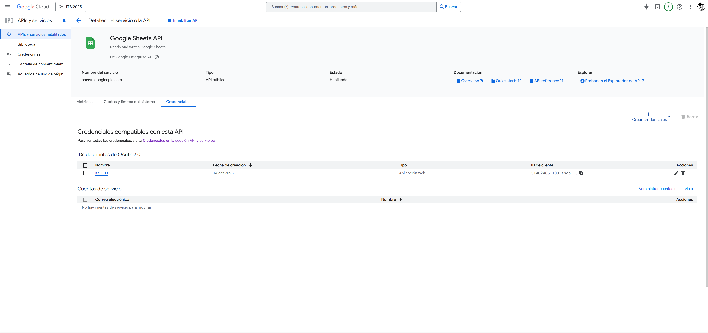
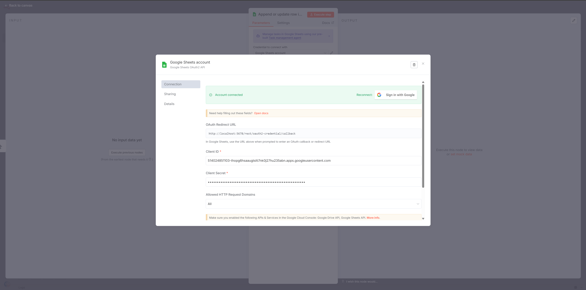
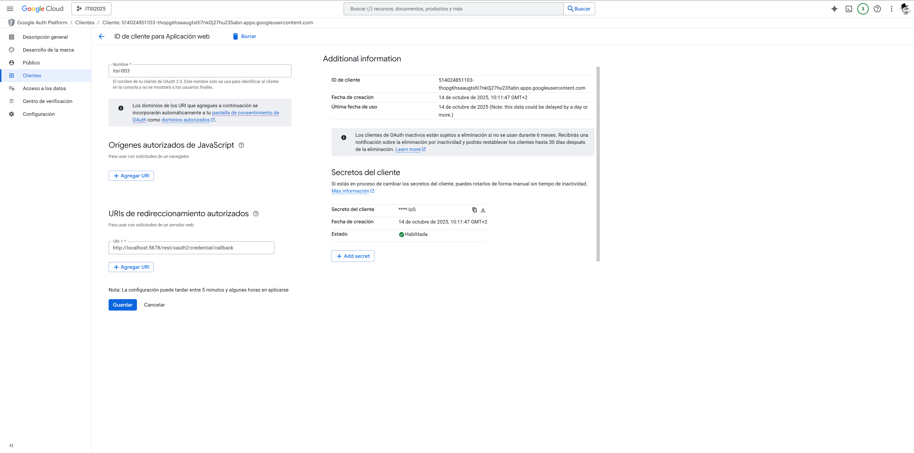
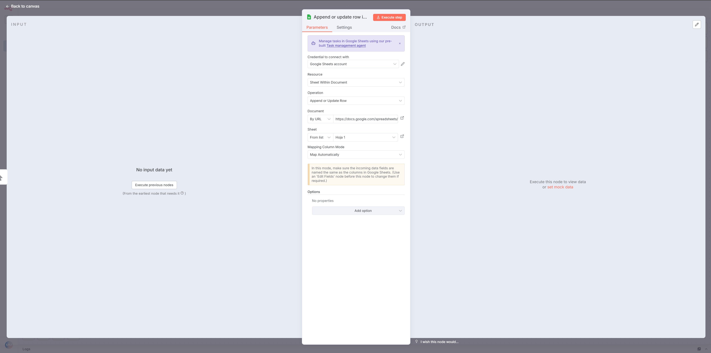
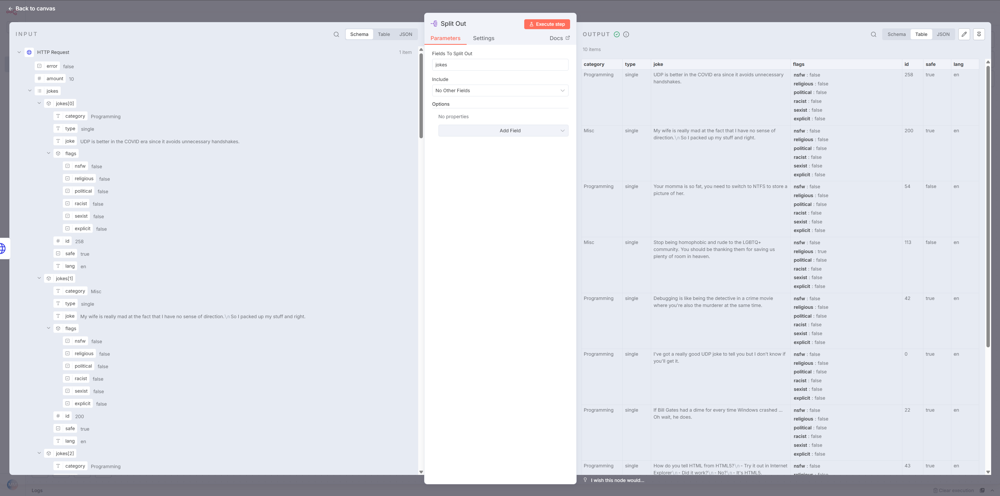
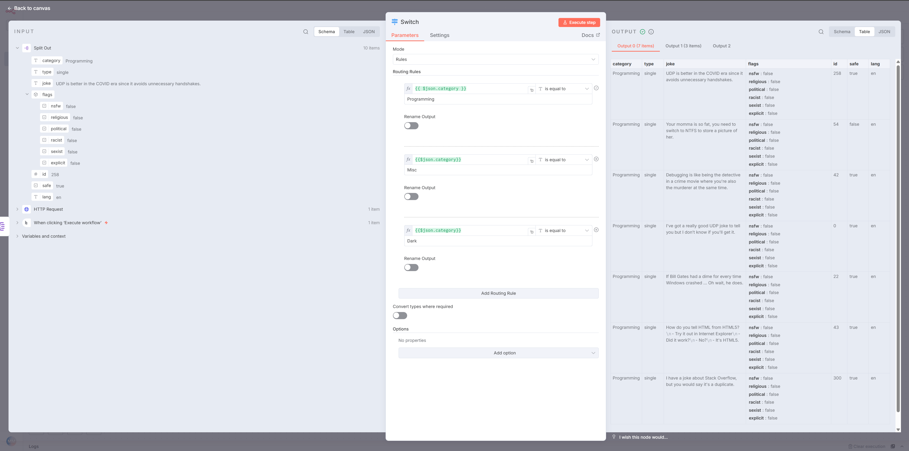

Resumen
Esta práctica introduce la autenticación con servicios externos mediante el sistema de credenciales de n8n, y realiza la primera integración con un servicio persistente: Google Sheets. Se amplía la lógica de negocio más allá del nodo IF con el nodo Switch (enrutamiento de múltiples ramas) y el nodo Merge (fusión de flujos de datos). A lo largo de la sesión se construye un flujo de trabajo guiado que clasifica chistes por categoría y los escribe en hojas separadas de un documento de Google Sheets, y se resuelven varios ejercicios de complejidad creciente para consolidar los conceptos.
-
Gestión de Autenticación.
-
Integración con Servicios de Terceros.
-
Lógica de Enrutamiento Avanzada.
-
Fusión de Flujos de Datos.
-
Diseño de Flujos de Trabajo Modulares.
1. Objetivos de la Práctica
Esta tercera práctica representa un paso crucial hacia la construcción de automatizaciones de nivel profesional. Se abandonan las APIs públicas sin estado para realizar la primera integración con un servicio persistente y de uso extendido: Google Sheets. Este proceso introducirá el concepto fundamental de la gestión de credenciales. Además, se ampliarán las capacidades de lógica de negocio de los flujos de trabajo, superando la bifurcación simple del nodo IF para implementar enrutamientos complejos con múltiples salidas.
Al finalizar esta sesión, el estudiante habrá desarrollado las siguientes competencias:
-
Gestión de Autenticación: Comprender el propósito del sistema de credenciales de n8n y configurar con éxito una credencial OAuth 2.0 para interactuar con las APIs de Google.
-
Integración con Servicios de Terceros: Utilizar el nodo de Google Sheets para realizar operaciones de escritura (añadir filas) en una hoja de cálculo, sentando las bases para futuras integraciones con bases de datos y otros servicios SaaS.
-
Lógica de Enrutamiento Avanzada: Implementar el nodo
Switchpara dirigir el flujo de datos hacia múltiples ramas de ejecución basándose en el valor de un campo, superando la limitación de dos salidas del nodoIF. -
Fusión de Flujos de Datos: Utilizar el nodo
Mergepara recombinar múltiples ramas de ejecución en un único flujo de datos, un patrón esencial para la consolidación de resultados y la continuación de un proceso unificado. -
Diseño de Flujos de Trabajo Modulares: Construir flujos de trabajo que procesan, enrutan, actúan y consolidan datos de manera estructurada, aplicando los principios de diseño de software a la automatización visual.
2. Fundamentos Teóricos
2.1. Gestión de Credenciales en n8n
Hasta ahora, hemos interactuado exclusivamente con APIs públicas que no requieren autenticación. Sin embargo, la gran mayoría de los servicios (Google Sheets, Slack, bases de datos, etc.) necesitan verificar la identidad y los permisos del cliente que realiza la solicitud. n8n centraliza y asegura este proceso a través de su sistema de Credenciales.
Una credencial en n8n es un registro seguro que almacena la información de autenticación para un servicio específico (una clave de API, un token de acceso OAuth 2.0, un par de usuario/contraseña, etc.). Almacenar esta información en el gestor de credenciales en lugar de escribirla directamente en los nodos ofrece ventajas críticas:
-
Seguridad: La información sensible se cifra y se almacena de forma centralizada, en lugar de estar visible en el JSON del flujo de trabajo.
-
Reutilización: Una única credencial (por ejemplo, para una cuenta de Google) puede ser utilizada en docenas de flujos de trabajo y nodos diferentes. Si la credencial necesita ser actualizada, solo se cambia en un lugar.
-
Abstracción: El desarrollador del flujo de trabajo no necesita gestionar la complejidad de los flujos de autenticación como OAuth 2.0. Simplemente selecciona la credencial apropiada y n8n se encarga del resto.
Para esta práctica, crearemos una credencial de Google usando el protocolo OAuth 2.0, que es un estándar de la industria para la autorización delegada. Esto implica un proceso único en la Consola de Google Cloud para autorizar a nuestra instancia de n8n a actuar en nuestro nombre en servicios como Google Sheets.
2.2. Lógica de Múltiples Ramas: El Nodo Switch
En la práctica anterior, el nodo IF nos permitió crear lógica condicional con dos salidas: true y false. Sin embargo, muchos problemas del mundo real requieren más de dos caminos. Por ejemplo, clasificar un ticket de soporte por prioridad (Baja, Media, Alta, Urgente) o procesar pedidos según el país de envío. Para estos escenarios, encadenar múltiples nodos IF sería ineficiente y difícil de leer.
El nodo Switch es la solución de n8n para el enrutamiento de múltiples ramas. Funciona de manera similar a una declaración switch en lenguajes de programación. Se configura un campo de "Enrutamiento" (el valor a evaluar, por ejemplo, {{ $json.category }}) y luego se definen múltiples reglas de enrutamiento. Cada regla compara el valor del campo con un valor específico y, si coincide, envía el ítem a su salida correspondiente.
El nodo Switch crea una salida numerada para cada regla (0, 1, 2,…). También proporciona una salida default (predeterminada) para los ítems que no coinciden con ninguna de las reglas definidas, lo que es crucial para manejar casos inesperados.
2.3. Fusión de Flujos de Datos: El Nodo Merge
Cuando un flujo de trabajo se divide en múltiples ramas (usando IF o Switch), a menudo es necesario volver a unir esas ramas para realizar una acción final común. Por ejemplo, después de procesar pedidos de diferentes países en ramas separadas, es posible que queramos enviar una única notificación de resumen o registrar todos los pedidos procesados en un log.
El nodo Merge está diseñado específicamente para este propósito. Espera a que todas sus entradas conectadas hayan terminado de ejecutarse y luego combina los ítems que reciben en un único flujo de salida. El nodo Merge es altamente configurable y ofrece varios modos de operación para diferentes escenarios de fusión de datos:
-
Append (Anexar): Es el modo más simple. Simplemente toma todos los ítems de la primera entrada, luego todos los de la segunda, y así sucesivamente, y los coloca en un único array de salida.
-
Combine by Position (Combinar por Posición): Une los ítems basándose en su orden. El primer ítem de la entrada 1 se fusiona con el primer ítem de la entrada 2, el segundo con el segundo, etc.
-
Combine by Key (Combinar por Clave): Es el modo más potente. Fusiona ítems de dos entradas que tienen un valor coincidente en un campo clave especificado. Por ejemplo, se podrían combinar datos de clientes de un sistema con datos de pedidos de otro, usando el
customer_idcomo clave de unión.
Para el flujo de trabajo guiado, utilizaremos el modo Append para consolidar los resultados de nuestras diferentes ramas de Switch antes de finalizar el flujo de trabajo. Los modos Combine by Position y Combine by Key se pondrán en práctica en los ejercicios propuestos.
3. Desarrollo del Flujo de Trabajo Guiado
En esta sección, construiremos paso a paso un flujo de trabajo que obtiene chistes de tres categorías diferentes, los clasifica usando un nodo Switch y escribe cada tipo de chiste en una hoja separada dentro de un único documento de Google Sheets. Al finalizar, el flujo quedará listo para ejecutarse de forma manual o programada.
3.1. Paso 1: Preparar el Documento de Google Sheets
-
Vaya a
https://sheets.google.comy cree una nueva hoja de cálculo. Póngale un nombre descriptivo, como "Clasificación de Chistes n8n". -
Dentro de este documento, cree tres hojas (pestañas). Renómbrelas a:
Programming,MiscyDark. -
En cada una de las tres hojas, añada las siguientes cabeceras en la primera fila:
ID,ChisteyFecha de Procesamiento.
3.2. Paso 2: Configurar las Credenciales de Google (OAuth 2.0)
Este es el paso más complejo, pero solo necesita hacerse una vez. Siga la guía oficial de n8n o un tutorial detallado para configurar las credenciales de Google OAuth. El proceso general es:
-
Vaya a la
https://console.cloud.google.com/. -
Cree un nuevo proyecto (o use uno existente).
-
Habilite la Google Sheets API para ese proyecto.
-
Habilite la Google Drive API para ese proyecto.

-
Vaya a "Pantalla de consentimiento de OAuth", configúrela como "Externa" y añada su propia dirección de correo electrónico como usuario de prueba.
-
Vaya a "Credenciales", haga clic en "Crear credenciales" → "ID de cliente de OAuth".
-
Seleccione "Aplicación web" como tipo.
-
En n8n, añada un nodo de Google Sheets, haga clic en "Credential" → "Create New". Copie la "URL de redireccionamiento de OAuth" que n8n le proporciona.

-
Pegue esa URL en el campo "URI de redireccionamiento autorizados" en la Consola de Google Cloud.

-
Cree las credenciales. Google le proporcionará un ID de cliente y un Secreto de cliente.
-
Copie y pegue estos dos valores en la ventana de creación de credenciales de n8n y guarde.
-
n8n le pedirá que inicie sesión con su cuenta de Google para autorizar la conexión.

3.3. Paso 3: Construir el Flujo de Trabajo
-
Manual Trigger: Comience con unManual Triggerpara facilitar las pruebas. -
HTTP Request:-
Añada un nodo
HTTP Requestpara obtener chistes de múltiples categorías. -
URL:
https://v2.jokeapi.dev/joke/Programming,Misc,Dark?type=single&amount=10 -
Ejecute el nodo y verifique que recibe un array de 10 chistes en el campo
jokes.
-
-
Split Out:-
Añada un nodo
Split Outpara procesar cada chiste individualmente. -
Field To Split Out:
jokes
-

-
SwitchNode:-
Añada un nodo
Switchpara enrutar los chistes. -
Mode:
Rules -
Routing Field:
{{ $json.category }} -
Routing Rules:
-
Output 0:
is equal to→Programming -
Add Routing Rule
-
Output 1:
is equal to→Misc -
Add Routing Rule
-
Output 2:
is equal to→Dark
-
-
Ejecute el nodo y verifique que los ítems se distribuyen correctamente entre las salidas 0, 1 y 2.
-

-
Nodos
Google Sheets:-
Ahora, conecte un nodo
Google Sheetsa cada una de las tres salidas delSwitch. -
Para la Salida 0 (Programming):
-
Credential: Seleccione la credencial de Google que creó.
-
Operation:
Append Row -
Document: Seleccione su hoja de cálculo "Clasificación de Chistes n8n".
-
Sheet: Seleccione la hoja
Programming. -
Columns:
-
ID:{{ $json.id }} -
Chiste:{{ $json.joke }} -
Fecha de Procesamiento:{{ $now }}(variable global de n8n que devuelve la fecha y hora actuales).
-
-
-
Para la Salida 1 (Misc):
-
Copie el nodo anterior y conéctelo a la salida 1.
-
Modifique solo el parámetro Sheet para que apunte a la hoja
Misc.
-
-
Para la Salida 2 (Dark):
-
Copie el nodo de nuevo y conéctelo a la salida 2.
-
Modifique el parámetro Sheet para que apunte a la hoja
Dark.
-
-
-
MergeNode:-
Añada un nodo
Mergeal lienzo. -
Conecte las salidas de los tres nodos de
Google Sheetsa la única entrada del nodoMerge. -
Mode:
Append -
Esto asegurará que el flujo de trabajo continúe solo después de que todas las operaciones de escritura en la hoja de cálculo hayan finalizado.
-
-
Ejecución Final:
-
Ejecute el flujo de trabajo completo desde el
Manual Trigger. -
Abra su documento de Google Sheets. Debería ver los chistes distribuidos correctamente en sus respectivas hojas, cada uno con su ID y la fecha de procesamiento.
-
4. Ejercicios Propuestos
4.1. Ejercicio 1: Consolidación en una Sola Hoja (Dificultad: Baja)
Objetivo: Modificar el flujo de trabajo guiado para que, en lugar de escribir en tres hojas diferentes, escriba todos los chistes en una única hoja llamada "Todos", pero añadiendo una columna que especifique la categoría original.
Requisitos:
-
Elimine los tres nodos de Google Sheets y el nodo
Mergedel flujo de trabajo guiado. -
Entre cada salida del
Switchy el nodo de Google Sheets, añada un nodoEdit Fields (Set)que cree un campocategoria_originalcon el valor correspondiente ("Programming", "Misc" o "Dark"). -
Conecte las tres salidas (a través de sus respectivos nodos
Edit Fields (Set)) a un único nodoGoogle Sheets. -
Configure este nodo para que escriba en una nueva hoja "Todos" y mapee las columnas
ID,Chiste,Fecha de Procesamientoy la nuevacategoria_original.
4.2. Ejercicio 2: Clasificación de Productos por Valoración (Dificultad: Media)
Objetivo: Crear un nuevo flujo de trabajo desde cero que analice productos de una API de comercio electrónico de prueba, los clasifique según su valoración y los guarde en diferentes hojas de un documento de Google Sheets.
API a utilizar: Fake Store API (https://fakestoreapi.com/products)
Requisitos:
-
El flujo de trabajo debe iniciarse con un
Manual Trigger. -
Use un
HTTP Requestpara obtener todos los productos de la API. -
Use un
Split Outsobre el campoproducts(o el array de la respuesta) para procesar cada producto individualmente. -
Use un nodo
Switchen modoRulescon el Routing Field{{ $json.rating.rate }}para clasificar los productos en tres rangos:-
Salida 0 ("Top"): una condición
is greater than or equal to4.5. -
Salida 1 ("Bueno"): dos condiciones combinadas con
AND:is greater than or equal to3.5yis less than4.5. -
Salida 2 ("Regular"): una condición
is less than3.5. -
(Pista: en el modo
Rules, cada salida puede tener varias condiciones. Añada una segunda condición a la Salida 1 y asegúrese de que el operador lógico entre condiciones seaAND).
-
-
Cree un Google Sheet llamado "Análisis de Valoraciones" con tres hojas:
Top,BuenoyRegular. -
Escriba los productos en la hoja correspondiente, incluyendo al menos las columnas
ID,Título,PrecioyValoración.
4.3. Ejercicio 3: Gestor de Tareas por Prioridad (Dificultad: Alta)
Objetivo: Crear un flujo de trabajo que obtenga actividades aleatorias, las clasifique por prioridad y tipo, las asigne a diferentes "departamentos" (hojas de cálculo) y registre cada asignación en un log general.
APIs a utilizar:
. Para obtener actividades: The Bored API (https://bored-api.appbrewery.com/filter?number=5)
. Para almacenar los resultados: Google Sheets
Requisitos:
-
Use un nodo
Schedule Triggerpara que se ejecute cada 5 minutos. -
Use un
HTTP Requestpara obtener 5 actividades de la Bored API (el endpoint/filter?number=5devuelve un array de 5 objetos). -
Use un
Split Outsobre el array de actividades para procesar cada una individualmente. -
Añada un nodo
Edit Fields (Set)(oCode) que, para cada actividad, genere aleatoriamente un campoprioritycon uno de los valores "Alta", "Media" o "Baja", y un campotypecon uno de los valores "Técnico", "Marketing" o "Administrativo". (Pista: puede usar la expresión{{ $random.int(0, 2) }}para generar un entero aleatorio y mapearlo a un valor). -
Use un nodo
Switchpara enrutar las tareas según supriority(tres salidas: "Alta", "Media", "Baja"). -
Para cada rama de prioridad:
-
Use otro nodo
Switchanidado para enrutar la tarea según sutype(tres salidas: "Técnico", "Marketing", "Administrativo"). -
Escriba la tarea en una hoja de cálculo específica. Por ejemplo, una tarea de prioridad "Alta" y tipo "Técnico" iría a una hoja llamada "Tareas_Tecnicas_Alta". Deberá crear las 9 hojas correspondientes a las combinaciones.
-
-
Use un nodo
Mergeen modoAppendpara unir todas las ramas finales. -
Después del
Merge, use un único nodoGoogle Sheetspara añadir una entrada a una hoja de log llamada "Registro_General" que contenga laactivity,priority,typey lahora_asignacion(use{{ $now }}).
4.4. Ejercicio 4: Repositorios de GitHub por Lenguaje (Dificultad: Media)
Objetivo: Crear un flujo de trabajo que obtenga la lista de repositorios de una organización de GitHub, los clasifique por lenguaje de programación usando un nodo Switch con salida default, y los guarde en hojas separadas de un documento de Google Sheets.
API a utilizar: GitHub API (gratuita, sin clave para uso básico): https://api.github.com/orgs/{org}/repos?per_page=30 (sustituya {org} por el nombre de una organización, por ejemplo google o microsoft).
Requisitos:
-
El flujo de trabajo debe iniciarse con un
Manual Trigger. -
Use un
HTTP Requestpara obtener los repositorios de la organización elegida. -
Use un
Split Outsobre el array de repositorios para procesar cada uno individualmente. -
Use un nodo
Switchen modoRulescon el Routing Field{{ $json.language }}para clasificar los repositorios:-
Salida 0:
is equal toJavaScript -
Salida 1:
is equal toPython -
Salida 2:
is equal toC++ -
Salida
default: para todos los demás lenguajes (incluyendonullsi el repositorio no tiene lenguaje definido).
-
-
Cree un Google Sheet con cuatro hojas:
JavaScript,Python,C++yOtros. -
Escriba los repositorios en la hoja correspondiente, incluyendo al menos las columnas
Nombre,Lenguaje,Estrellas(stargazers_count) yÚltima Actualización(updated_at). -
Pregunta de reflexión: ¿Qué pasaría si la organización no tiene ningún repositorio en Python? ¿Se ejecutaría la rama correspondiente? Investigue cómo se comporta un nodo
Switchcuando una de sus salidas no recibe ítems.
4.5. Ejercicio 5: Pronóstico del Tiempo con Transformación de Datos (Dificultad: Media-Alta)
Objetivo: Crear un flujo de trabajo que obtenga el pronóstico del tiempo a 5 días, transforme la estructura de datos de la API (arrays paralelos) a un formato procesable, clasifique cada día por tipo de tiempo y guarde el resultado en Google Sheets.
API a utilizar: Open-Meteo (gratuita, sin clave API): https://api.open-meteo.com/v1/forecast?latitude=40.4168&longitude=-3.7038&daily=weather_code,temperature_2m_max&timezone=auto&forecast_days=5 (coordenadas de Madrid).
Requisitos:
-
El flujo de trabajo debe iniciarse con un
Manual Trigger. -
Use un
HTTP Requestpara obtener el pronóstico. Observe que la respuesta contiene un objetodailycon arrays paralelos (time,weather_code,temperature_2m_max), no un array de objetos. -
Añada un nodo
Code(tipo JavaScript) que transforme los arrays paralelos en un array de objetos, uno por día. Cada objeto debe tener las propiedadesfecha,codigoytemp_max. (Pista: use un bucleforsobre el índice del arraytimey construya un objeto condaily.time[i],daily.weather_code[i]ydaily.temperature_2m_max[i]). -
Use un
Split Outsobre el array de objetos generado por el nodoCode. -
Use un nodo
Switchen modoRulescon el Routing Field{{ $json.codigo }}para clasificar cada día:-
Salida 0 ("Despejado"):
is less than or equal to1 -
Salida 1 ("Nublado"):
is greater than1yis less than or equal to3(dos condiciones conAND) -
Salida 2 ("Lluvia"):
is greater than or equal to51yis less than or equal to67(dos condiciones conAND) -
Salida
default: para el resto de códigos (nieve, tormentas, etc.).
-
-
Cree un Google Sheet con cuatro hojas:
Despejado,Nublado,LluviayOtro. -
Escriba cada día en la hoja correspondiente, incluyendo las columnas
Fecha,Código WMO,Temperatura Máx (°C)yCategoría. -
Pregunta de reflexión: Investigue la tabla de códigos WMO (World Meteorological Organization) y añada una quinta salida al
Switchpara los días con nieve (códigos 71-77).
4.6. Ejercicio 6: Combinación de Datos por Posición (Dificultad: Alta)
Objetivo: Crear un flujo de trabajo que obtenga datos de dos APIs diferentes en paralelo y los combine posición a posición usando el nodo Merge en modo Combine by Position, para generar un "plan de día" que incluye un chiste y una actividad.
APIs a utilizar:
. JokeAPI: https://v2.jokeapi.dev/joke/Programming?type=single&amount=5
. Bored API: https://bored-api.appbrewery.com/filter?number=5
Requisitos:
-
El flujo de trabajo debe iniciarse con un
Manual Trigger. -
Añada dos nodos
HTTP Requestconectados en paralelo alManual Trigger: uno para la JokeAPI y otro para la Bored API. -
Añada un
Split Outa la salida de cadaHTTP Request(campojokespara la JokeAPI; el array de la Bored API para la otra). -
Añada un nodo
Mergeen modoCombine by Positiony conecte las salidas de ambosSplit Outa las dos entradas delMerge. El primer chiste se combinará con la primera actividad, el segundo con la segunda, y así sucesivamente. -
Añada un nodo
Edit Fields (Set)después delMergeque cree un campoplancombinando el chiste ({{ $json.joke }}) y la actividad ({{ $json.activity }}) en un único texto. -
Escriba los planes en una hoja de Google Sheets llamada "Planes", con las columnas
Chiste,ActividadyPlan. -
Pregunta de reflexión: ¿Qué pasaría si una de las APIs devolviera menos de 5 elementos? Investigue cómo se comporta el modo
Combine by Positioncuando las dos entradas tienen un número diferente de ítems.
4.7. Ejercicio 7: Informe Diario de Productos (Dificultad: Muy Alta)
Objetivo: Crear un flujo de trabajo completo y autónomo que se ejecute una vez al día, obtenga todos los productos de la Fake Store API, los clasifique por rango de precio, los consolide en un único flujo y genere un informe en una sola hoja de Google Sheets. Este ejercicio combina todos los conceptos de la práctica en un único pipeline.
API a utilizar: Fake Store API (https://fakestoreapi.com/products)
Requisitos:
-
El flujo de trabajo debe iniciarse con un
Schedule Triggerque se ejecute una vez al día (a las 8:00 AM). -
Use un
HTTP Requestpara obtener todos los productos. -
Use un
Split Outpara procesar cada producto individualmente. -
Use un nodo
Switchen modoRulescon el Routing Field{{ $json.price }}para clasificar los productos en tres rangos:-
Salida 0 ("Económico"):
is less than50 -
Salida 1 ("Medio"):
is greater than or equal to50yis less than or equal to200(dos condiciones conAND) -
Salida 2 ("Premium"):
is greater than200
-
-
En cada rama, añada un nodo
Edit Fields (Set)que cree un campocategoriacon el valor correspondiente ("Económico", "Medio" o "Premium"). -
Use un nodo
Mergeen modoAppendpara consolidar las tres ramas en un único flujo. -
Después del
Merge, use un único nodoGoogle Sheetspara escribir todos los productos en una hoja llamada "Informe_Diario", incluyendo las columnasID,Título,Precio,CategoríayFecha del Informe(use{{ $now }}). -
Active el flujo de trabajo y verifique que se ejecuta correctamente a la hora programada.
-
Pregunta de reflexión: ¿Cómo modificaría este flujo para que, en lugar de escribir todos los productos en una sola hoja, escribiera un resumen (número de productos por categoría) en una hoja separada? Investigue el nodo
Aggregateo el uso de un nodoCodepara calcular agregados.
5. Conclusiones y Avance de la Próxima Práctica
Con esta práctica, hemos cruzado un umbral importante. La capacidad de autenticarse con servicios externos, combinada con el enrutamiento y la fusión de datos, nos permite diseñar flujos de trabajo que modelan procesos de negocio reales y complejos. Hemos aprendido a gestionar la lógica de múltiples casos con el nodo Switch, a consolidar resultados con Merge y, lo más importante, a persistir nuestros datos en un sistema externo como Google Sheets.
En la próxima práctica, nos centraremos en la robustez y la modularidad de nuestros flujos de trabajo, introduciendo dos conceptos clave para la creación de automatizaciones a gran escala:
-
Manejo de Errores: Se presentará el
Error Triggery el nodoStop and Error. Aprenderemos a construir flujos de trabajo de "manejo de errores" dedicados que se activan cuando un flujo principal falla, permitiéndonos enviar notificaciones, registrar el error y tomar acciones correctivas. -
Sub-flujos de Trabajo (Sub-workflows): Se introducirán los nodos
Execute WorkflowyExecute Workflow Trigger. Aprenderemos a encapsular lógica reutilizable en flujos de trabajo secundarios que pueden ser llamados desde un flujo principal, promoviendo un diseño limpio, modular y fácil de mantener.